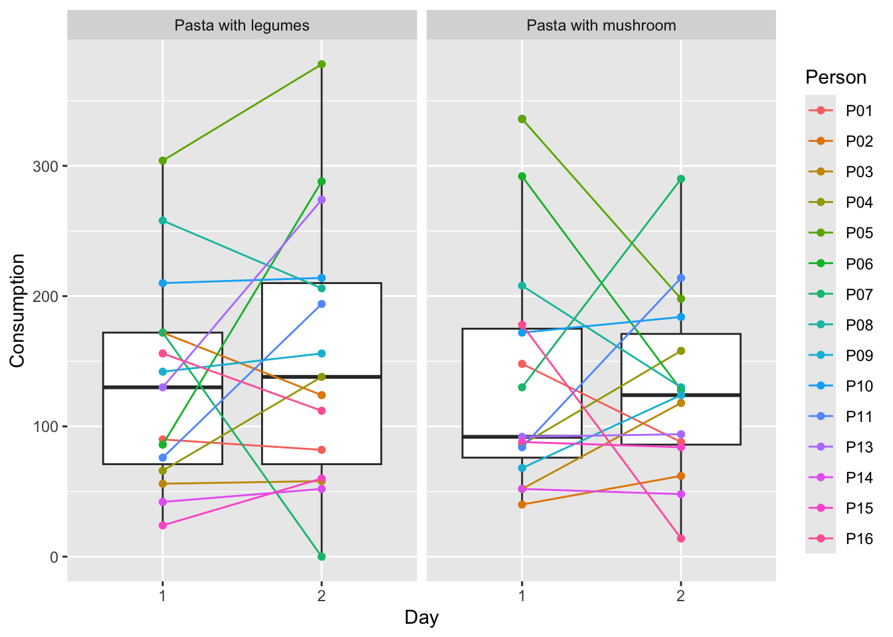
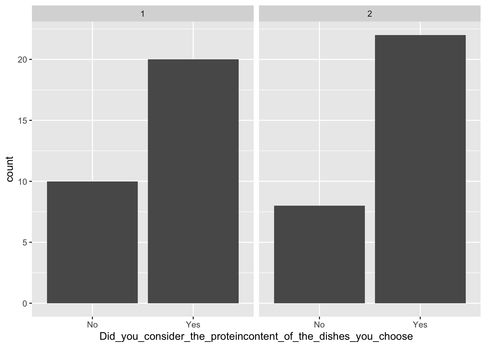
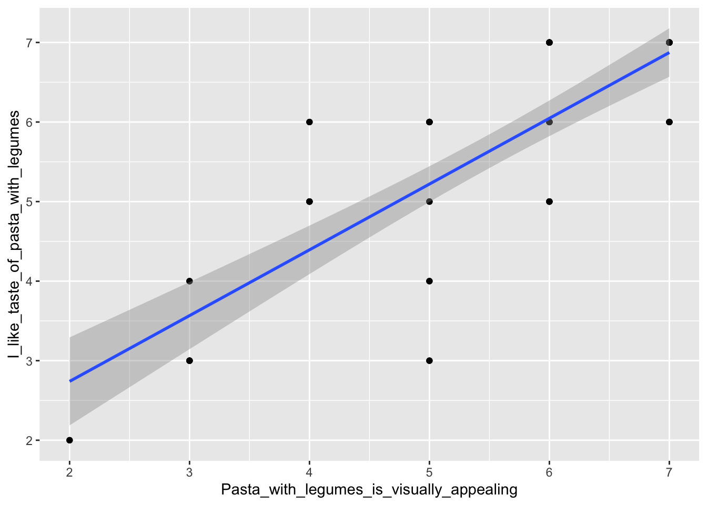
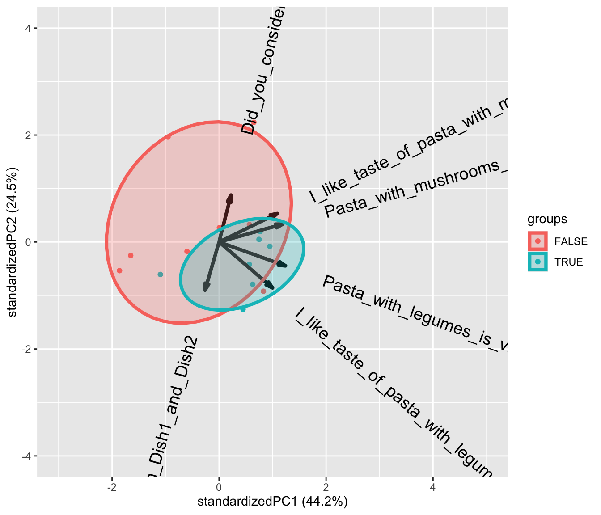

Chapter 8 Buffet and survey data
8.1 Buffet data
8.1.1 Introduction to buffet data
In the Meal Systems and Technologies course, we work with data from the iBuffet and data from a survey. You have to merge the two datasets. You can do this in Excel or in R. For the Excel guide, please see the teaching materials of the course in Absalon. For the R guide, please see How to edit and merge datasets
This chapter is missing a “Table 1”, as the data is insufficient in this part.
Our data analysis process for buffet and survey data is described below for a very simple dataset. Please elaborate plots and models to fit your own data.
First, it is a good idea to have a look at the dataset, see what the columns and rows consist of - it could also be a good idea to do some descriptive statistics. All of this is covered in the following chapters: Looking at the imported elements and Descriptive statistics.
Often however, it is much easier to understand the data when they are plotted.
8.1.2 Plotting buffet data
Below is one way to plot the data of the consumption from the buffet:
library(data4consumerscience)
library(ggplot2)
data(pasta)
ggplot(data = pasta, aes(x = factor(Day), y = Consumption)) +
geom_boxplot() +
geom_point(aes(color = Person)) +
geom_line(aes(group = Person, color = Person)) +
facet_wrap(~StationName) +
xlab('Day')
The plot shows a boxplot of the consumption for each day and for each serving station, and each point is the consumption of one person from one station. The colors are added to make it easier to see, how the consumption of the same person changes from day to day, as well as for each of the stations. For more information on plotting, see Plotting data.
Both the days and the stations look quite similar, but it also looks as if the variation in consumption is dependent on person. To test whether this is the case, we create a mixed model.
8.1.3 Mixed model for buffet data
The reason we create a mixed model is that we want to isolate the effect of day and station from the variation caused by which person actually consumed the food. This is done in the example below. For more information on mixed models, see Mixed model.
We use the packages lme4 and lmerTest, and use the data called pasta from the data4consumerscience-pacakge. The function lmer will create a mixed model when set up as below. This will yield how Day and StationName affect Consumption. When using ’*’ between Day and StationName, we tell R that we want both the effect of Day and StationName alone, as well as their interaction effect - which could be e.g. if 10 people tasted the pasta with mushrooms on day 1 and decided that they like this station better, and as a result increase consumption on day 2.
library(lme4)
library(lmerTest)
library(data4consumerscience)
data(pasta)
mdlmix <- lmer(data = pasta, Consumption ~ factor(Day)*StationName + (1|Person))
summary(mdlmix)## Linear mixed model fit by REML. t-tests use Satterthwaite's method ['lmerModLmerTest']
## Formula: Consumption ~ factor(Day) * StationName + (1 | Person)
## Data: pasta
##
## REML criterion at convergence: 663.5
##
## Scaled residuals:
## Min 1Q Median 3Q Max
## -2.4856 -0.6552 -0.1166 0.5527 2.3379
##
## Random effects:
## Groups Name Variance Std.Dev.
## Person (Intercept) 3263 57.12
## Residual 4314 65.68
## Number of obs: 60, groups: Person, 15
##
## Fixed effects:
## Estimate Std. Error df t value Pr(>|t|)
## (Intercept) 138.000 17.012 14.000 8.112 1.16e-06 ***
## factor(Day)1 -4.333 8.479 42.000 -0.511 0.612
## StationName1 6.000 8.479 42.000 0.708 0.483
## factor(Day)1:StationName1 -7.400 8.479 42.000 -0.873 0.388
## ---
## Signif. codes: 0 '***' 0.001 '**' 0.01 '*' 0.05 '.' 0.1 ' ' 1
##
## Correlation of Fixed Effects:
## (Intr) fc(D)1 SttnN1
## factor(Dy)1 0.000
## StationNam1 0.000 0.000
## fct(D)1:SN1 0.000 0.000 0.000What we often look at in an output like this is the p-values (Pr(>|t|)), which indicate whether or not the variable affects the model. The intercept is irrelevant in this case, as it tests whether or not the intercept is 0, and this is not relevant. What we observe is, that none of the p-values are below 0.05, which is the usual significance level used. This means, that neither day nor station has a significant impact on consumption, even when correcting for the variation caused by different people eating at the buffet.
8.2 Survey data
Survey data are (as the name implies) the result of a survey, where the questions can vary dramatically. The dataset used here does not have a lot of questions, so please feel free to elaborate on plots and models when analyzing your own data.
The same general advice applies here as in the case of the buffet data - inspect your data, calculate some descriptive statistics, and plot the data, to get a better understanding of the data.
8.2.1 Plotting survey data
Below are some examples of plots. First, a barplot showing the whether or not the participants of the survey considered the protein content of the dishes, split between day 1 and 2. Secondly, a histogram of the liking scores for each station, shown as the number of people giving a certain score on the Likert-scale.
The histogram can be created by creating each plot separately, assigning each plot to a variable, and then arranging them next to each other using grid.arrange from the gridExtra-package.
It can also be created using what is called a ‘pipe operator’ (%>%), which is a function from within the tidyverse-package, and with a little help from the data.table-package. The pipe operator is a nice tool to reduce the amount of code and variable names needed, and can be used for a lot of different stuff. For example, filter can be used to select specific rows, as is done here, where we select rows in column ‘Question’, that include the text ‘like’, and as the questions about liking are the only questions containing this text, these are the rows selected.
To learn more about the pipe operator, see Edit using Tidyverse. Here, there is also an explanation of the other functions such as pivot_longer.
library(ggplot2)
library(data4consumerscience)
data(pasta)
ggplot(data = pasta, aes(x = Did_you_consider_the_proteincontent_of_the_dishes_you_choose)) +
geom_bar() +
facet_wrap(~factor(Day))
#Arranging to plots together
library(gridExtra)
legumes <- ggplot(data = pasta, aes(x = I_like_taste_of_pasta_with_legumes)) +
geom_histogram() +
ggtitle('Legumes - liking')
mushrooms <- ggplot(data = pasta, aes(x = I_like_taste_of_pasta_with_mushrooms)) +
geom_histogram() +
ggtitle('Mushrooms - liking')
grid.arrange(legumes,mushrooms, nrow = 1)
#The fancy way:
library(tidyverse)
library(data.table)
pasta %>%
pivot_longer(cols = I_like_taste_of_pasta_with_legumes:Pasta_with_mushrooms_is_visually_appealing, names_to = 'Question',
values_to = 'Answer',
) %>%
filter(., Question %like% 'like') %>%
ggplot(data = ., aes(x = Answer)) +
geom_histogram() +
facet_wrap(~Question)Another nice plot is a bivariate plot, plotting two variables against each other and adding a regression line (using geom_smooth(), and specifying method = 'lm' for a linear regression for formula = 'y ~ x'). This has been done below, to see if there is a correlation between the liking and the rating of the visual appearance for pasta with legumes:
library(ggplot2)
ggplot(data = pasta, aes(x = Pasta_with_legumes_is_visually_appealing, y = I_like_taste_of_pasta_with_legumes)) + geom_point() + geom_smooth(method = 'lm', formula = 'y ~ x')
8.2.2 Linear model for buffet data
You can also create a linear regression model explaining the relationship between liking and visual apperance, as is done below using the lm()-function.
mdl <- lm(data = pasta, I_like_taste_of_pasta_with_legumes ~ Pasta_with_legumes_is_visually_appealing)
summary(mdl)##
## Call:
## lm(formula = I_like_taste_of_pasta_with_legumes ~ Pasta_with_legumes_is_visually_appealing,
## data = pasta)
##
## Residuals:
## Min 1Q Median 3Q Max
## -2.2199 -0.5664 0.1265 0.6068 1.6068
##
## Coefficients:
## Estimate Std. Error t value Pr(>|t|)
## (Intercept) 1.08609 0.41462 2.62 0.0112 *
## Pasta_with_legumes_is_visually_appealing 0.82677 0.07288 11.35 2.36e-16 ***
## ---
## Signif. codes: 0 '***' 0.001 '**' 0.01 '*' 0.05 '.' 0.1 ' ' 1
##
## Residual standard error: 0.8213 on 58 degrees of freedom
## Multiple R-squared: 0.6893, Adjusted R-squared: 0.684
## F-statistic: 128.7 on 1 and 58 DF, p-value: 2.356e-16The summary()-function will give a lot of information about the model, e.g. the p-value, which is much lower than 0.05 (it is 2.36e-16), showing that the visual rating and the liking are indeed highly correlated. Also, the estimates of the summary are in fact the estimates of the parameters of the regression line, that follows \(y = a + b\cdot x\). The estimate is: \(\hat{y}=0.82677 \cdot x \ + 1.08609\). Have a look at the plot and see if it fits with the regression line we created before. To learn more about linear models, see Normal and Mixed models
8.2.3 Post-hoc test for survey data
One can also investigate whether two or more discrete groups are different from one another. The model is created the same way as above for the linear model, with the exception that our x is now discrete (Why_did_you_consider_the_proteincontent).
A very useful outcome of a model like this is the pairwise comparison between groups - in this case the different considerations about the protein content of the dish. The pairwise comparison compares all the groups (here the considerations), and the result is a letter assigned to each group. If two groups have different letters, the two groups are significantly different from each other, whereas if two groups have the same letter, they are not.
library(multcomp)
pasta$Why_did_you_consider_the_proteincontent <- as.factor(pasta$Why_did_you_consider_the_proteincontent)
model <- lm(data = pasta, I_like_taste_of_pasta_with_legumes ~ Why_did_you_consider_the_proteincontent)
cld(glht(model, linfct = mcp(Why_did_you_consider_the_proteincontent = "Tukey")))## Because I know that I need protein for my overall health
## "a"
## Because I try to follow the Danish Dietary Guidelines
## "a"
## I did not consider this
## "a"In our case, the consideration about protein content did not affect the liking of pasta with legumes, as all groups have been assigned with the same letter. For more information on the post-hoc test, see Post hoc test - Tukey’s Honest Significant Difference.
8.3 Combining consumption and survey data
It is of course interesting to investigate how the consumption and the survey correlate. One example of how to look at this can be seen below. First, the data from the ‘Pasta with legumes’-station are plotted in a bivariate plot, where consumption is plotted against liking of pasta with legumes.
Next, a linear model is created to test whether the correlation is significant, and to see the estimates.
library(ggplot2)
#Bivariate plot
ggplot(data = pasta[pasta$StationName=='Pasta with legumes',], aes(x = I_like_taste_of_pasta_with_legumes, y = Consumption)) + geom_point() + geom_smooth(method = 'lm', formula = 'y ~ x')#Model
library(tidyverse)
library(data.table)
fullmodel <- pasta %>%
filter(.,StationName %like% 'legumes') %>%
lm(data = ., Consumption ~ I_like_taste_of_pasta_with_legumes)
summary(fullmodel)##
## Call:
## lm(formula = Consumption ~ I_like_taste_of_pasta_with_legumes,
## data = .)
##
## Residuals:
## Min 1Q Median 3Q Max
## -108.274 -63.415 -9.345 36.944 187.726
##
## Coefficients:
## Estimate Std. Error t value Pr(>|t|)
## (Intercept) -46.740 57.942 -0.807 0.42665
## I_like_taste_of_pasta_with_legumes 33.859 9.961 3.399 0.00205 **
## ---
## Signif. codes: 0 '***' 0.001 '**' 0.01 '*' 0.05 '.' 0.1 ' ' 1
##
## Residual standard error: 79.05 on 28 degrees of freedom
## Multiple R-squared: 0.2921, Adjusted R-squared: 0.2668
## F-statistic: 11.55 on 1 and 28 DF, p-value: 0.002048The model shows, that indeed, the liking of pasta with legumes affects the consumption of pasta with legumes (as the p-value is 0.00205, which is below 0.05).
Also shown are the estimates of the regression: \(\hat{y}= 33.859\cdot x \ -46.740\)
8.4 PCA on survey answers
We use the ggbiplot package for plotting the PCA model (See Biplot for details).
library(data4consumerscience)
library(tidyverse)
library(ggbiplot)8.4.1 Wrangle data
PCA takes numerical data as input, so we use the likert-scales in the form of 1 to 7. Further the yes/no answers are included, and also needs to be changed.
data('pasta')
x <- pasta %>%
mutate(Did_you_take_food_from_both_Dish1_and_Dish2 =
Did_you_take_food_from_both_Dish1_and_Dish2 %>% factor %>% as.numeric(),
Did_you_consider_the_proteincontent_of_the_dishes_you_choose =
Did_you_consider_the_proteincontent_of_the_dishes_you_choose %>%
factor() %>% as.numeric()) %>%
mutate_if(is.factor, as.numeric) %>%
filter(Day==1) %>% # the survey part is the same for both days and both stations. That is what we keep.
filter(str_detect(StationName,'leg'))8.4.3 Bi-plot
And a plot of the model
ggbiplot(PCAmdl, varname.size = 5) + ylim(c(-4,4)) + xlim(c(-2,5))
What does component 1 (PC1) reflect? What does PC2 reflect?
Lets plot the model and color the samples according to the consumption (of legumes) cutted at the median.
ggbiplot(PCAmdl, groups = factor(x$Consumption>130), ellipse = T,
varname.size = 5) + ylim(c(-4,4)) + xlim(c(-3,5))
8.4.4 Extract the components and run all associations.
We are interested in if any of the likert/survey traits reflected by PCA is correlated with consumption. It is a little complicated, but here goes
library(broom)
library(broom.mixed)
library(lme4)
scores <- data.frame(Person = x$Person, PCAmdl$x[,1:2]) # take out the first two components.
tbmixed <- pasta %>%
left_join(scores, by = 'Person') %>%
gather(comp,score,PC1:PC2) %>%
group_by(StationName,comp) %>%
do(lmer(data = ., Consumption~score + Day + (1|Person)) %>% tidy(conf.int = T))… Make a table and a plot of the results.
library(knitr)
tbmixed %>%
filter(term=='score') %>%
dplyr::select(-effect,-group) %>%
kable(x = .,caption = 'Slopes according to components', digits = 2, format = 'simple')| StationName | comp | term | estimate | std.error | statistic | df | p.value | conf.low | conf.high |
|---|---|---|---|---|---|---|---|---|---|
| Pasta with legumes | PC1 | score | 14.28 | 13.26 | 1.08 | 13 | 0.30 | -14.36 | 42.93 |
| Pasta with legumes | PC2 | score | -19.47 | 17.80 | -1.09 | 13 | 0.29 | -57.91 | 18.98 |
| Pasta with mushroom | PC1 | score | 5.15 | 10.69 | 0.48 | 13 | 0.64 | -17.94 | 28.25 |
| Pasta with mushroom | PC2 | score | -4.93 | 14.43 | -0.34 | 13 | 0.74 | -36.11 | 26.24 |
tbmixed %>%
filter(term=='score') %>%
ggplot(data = ., aes(comp,estimate,ymin = conf.low, ymax = conf.high)) +
geom_errorbar(width = 0.1) +geom_point()+
geom_hline(yintercept = 0) +
facet_grid(~StationName) +
theme(legend.position = 'bottom')
Interpret the results.